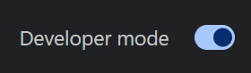
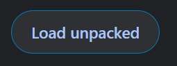

Valige teile kõige sobivam installimeetod
Valige, mis sobib teie töövooga.
Lihtsaim viis installimiseks Chrome'i, Edge'i, Brave'i või muudesse Chromiumipõhistesse brauseritesse.
Värskendused on saadaval iga paari nädala tagant pärast ülevaatusprotsessi.
Hankige Chrome'i veebipoestKõige värskem versioon Chrome'i, Edge'i, Brave'i ja muude Chromiumi brauserite jaoks.
Nõuab arendaja režiimi, kuid saab kohe värskendusi.
Vaadake paigaldusjuhiseid Laadige alla uusim versioonSigneeritud Firefoxi laiendus otse installimiseks.
Mõned funktsioonid, nagu TTS-mudelid ja vahelehe jäädvustamine, pole Firefoxis saadaval.
Vaadake paigaldusjuhiseid Laadige alla XPIEraldiseisev töölauarakendus Windows 10/11 (x64) jaoks.
Brauseri laiendust pole vaja. Värskendub automaatselt.
Laadige alla Windowsi jaoksEraldiseisev töölauarakendus macOS-i jaoks.
Brauseri laiendust pole vaja. Värskendub automaatselt.
Laadige alla macOS-i jaoksAppImage Linuxi distributsioonide jaoks.
Piiratud tugi, kuid peaks töötama enamiku kaasaegsete distributsioonidega.
Laadige alla AppImageKasutage ekraanil olevat täpset hoiatust, et leida ohutud sammud SmartScreeni, Defenderi, Smart App Controli, macOS-i arendajakontrollide, notariaalse kinnituse hoiatuste või Linux AppImage'i vigade jaoks.
Avage töölauarakenduse turvajuhendSSApp 0.4.7 ja uuemad sisaldavad sisseehitatud MCP käivitusrežiimi. Ei ole vaja allika kontrollimist, sõlme installimist ega eraldi adapterit. Pärast installimist lubage Fail > Kohalik AI / Automatiseerimine ja kopeerige loodud MCP seadistus.
Vaadake kohalikku AI ja MCP seadistustÜhendage YouTube, Twitch või Kick chat ilma laiendust või töölauarakendust installimata. Käivitage Lite brauseri vahekaardil või OBS-i kohandatud dokis ja kasutage selle ülekatte linki OBS-is.
Tavaline ülekattelink vajab vahekaardil või dokis töötamise jätkamiseks Lite'i. Ainult OBS-i häälestusvalikute kohta vaadake jaotist Lite OBS-i juhend.
Avage Social Stream Ninja LiteSocial Stream Ninja on avatud lähtekoodiga GPLv3.0 litsentsi alusel. Saate GitHubis projekti vaadata, kahveldada või sellele kaasa aidata.
Laadige ZIP-fail alla ja eraldage see oma arvuti kausta.
Laadige alla ZIPLiikuge oma brauseri laienduste lehele:
chrome://extensions/ Chrome'i jaoksedge://extensions/ Edge jaoksbrave://extensions/ Brave jaoks
Lülitage laienduste lehe paremas ülanurgas sisse "Arendaja režiim".

Klõpsake "Laadi lahti pakitud" ja valige kaust, kuhu failid ekstraktisite.

Oled valmis minema! Avage toetatud vestlusplatvorm ja klõpsake selle lubamiseks laienduse Social Stream Ninja ikooni.
Vaata kasutusjuhenditAvage Firefox ja installige laiendus:
about:addons FirefoxisFirefoxi versioonil on Chrome'iga võrreldes mõned piirangud:
Mõnel distributsioonil võib meie AppImage'i käitamisel ilmneda liivakasti tõrkeid. Vaadake meie liivakasti tõrkeotsingu juhendit kui näete SUID-i liivakasti konfiguratsiooni tõrkeid.
Laadige AppImage fail oma arvutisse alla.
Paremklõpsake faili ja valige Atribuudid, seejärel Õigused ja märkige ruut "Luba faili käivitamine programmina". Teise võimalusena kasutage terminali: chmod +x SocialStreamNinja.AppImage
Social Stream Ninja käivitamiseks topeltklõpsake AppImage või käivitage see terminalist: ./SocialStreamNinja.AppImage
Meie Discordi kogukond on valmis teid alustamiseks aitama
Laadige kohe alla Social Stream Ninja ja muutke oma vaatajaskonnaga suhtlemist erinevatel platvormidel.